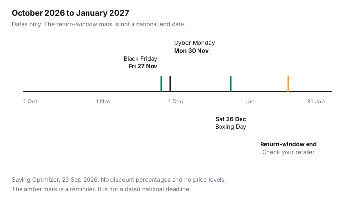

Technology · Canada
Black Friday vs Boxing Day for Tech in Canada (2026): Phones, Laptops, TVs and Headphones
A television, a laptop and a pair of headphones do not share a sale calendar just because they share a flyer. In 2026, Black Friday is Friday 27 November, Cyber Monday is Monday 30 November, and Boxing Day is Saturday 26 December. Buying in November can mean the model you measured is still in stock. Waiting can mean the same price in December, or a last year's model you did not plan to own. This page is electronics. Appliances on the same weekends are on the appliance timing guide, and coats are on the clothing timing guide. No typical discount percent is stated here, because none was taken from a dated retailer page.
Disclosure: Cash-back portal offers and retailer affiliate programs are offer types. Saving Optimizer may earn a commission if a partner link is added later. No partnership is claimed. Neither offer type changes an ordinary price, a return window or a warranty. Education only.
Key takeaways
- Black Friday 2026 is Friday 27 November. Cyber Monday is Monday 30 November. Boxing Day is Saturday 26 December. These are calendar dates, not a promise that every banner discounts every category.
- Last year's phone, laptop or TV is often the unit that moves. Write down the model number before you compare weekends.
- A "was" price is checked against the Competition Bureau's volume test and time test, in guidelines dated 16 October 2009. The Bureau's page says those guidelines are under review.
- Price adjustments, holiday return windows and restocking fees are retailer rules. This guide does not quote a window. Check the retailer.
- In Quebec, a new television bought from a merchant from 5 October 2026 carries a 4-year warranty of good working order, and a new laptop, phone or tablet carries 3 years. It is automatic and free.
The 2026 dates: Black Friday 27 Nov, Cyber Monday 30 Nov, Boxing Day 26 Dec
These are civil-calendar dates, not article dates, and not a claim that every store opens a sale on the morning of each one. Friday 27 November 2026 is Black Friday.
Monday 30 November 2026 is Cyber Monday. Saturday 26 December 2026 is Boxing Day. Prime Big Deal Days is an Amazon.ca event in October, separate from these three dates. Do not copy an October event onto a December flyer that has not published the same offer.
What to check is the same on each date, and it is not a percent off. Does the ordinary-price claim survive the Bureau's tests? Does the price-adjustment policy exclude the event? Is a holiday return window actually published for this season, or are you looking at last year's dates? For a new good bought in Quebec from 5 October 2026, is the warranty of good working order duration shown near the price? The Quebec warranty guide is the longer explanation. This page only marks the dates that change the electronics decision.
| Date | What it is | What to check |
|---|---|---|
| Friday 27 November 2026 | Black Friday | Ordinary-price claim, price-adjustment exclusions, and whether the model number is the one you specced |
| Monday 30 November 2026 | Cyber Monday | The same checks, plus who pays return shipping if the device is wrong |
| Saturday 26 December 2026 | Boxing Day | Whether a holiday return window is published for this season, restocking fees, and missing sizes or models |
| From 5 October 2026 | Quebec warranty of good working order, for new goods bought or leased from a merchant | Duration shown near the price: 4 years for a TV; 3 years for a laptop, desktop, cellphone, tablet or console |

Which tech categories tend to drop when, and why last year's model matters
Electronics move when a new model arrives, not only when a weekend is named. A phone, laptop or TV from the previous cycle is often the unit a retailer wants off the shelf before the next one lands.
That can happen in November, and it can happen again when Boxing Day clears what November did not sell. Headphones, tablets, consoles and smart-home gear are less tied to a single cold week than a winter coat is. The pressure is stock of a specific model, not weather.
Write the model number, the year of that model, and the storage or screen size before you compare two weekends. A lower ticket on a different model is not the same deal. A doorbuster is a count. If the sign does not say how many, assume the set you wanted may not be the set in the carton. "Up to" names a ceiling. The device you can take home can be anywhere under that ceiling. The TV spec guide and the laptop spec guide are where size, panel and RAM sit once you know which weekend you are shopping. Open-box units that appear beside the new cartons are on the open-box guide.
Checking 'was' prices against the Competition Bureau's ordinary-price rules
Photograph the crossed-out price beside the model number. Then ask which comparison the sign is making.
The Competition Bureau's ordinary-price guidelines are dated 16 October 2009. Checked 29 Sep 2026, the page still publishes them, and it says the Bureau is reviewing the guidelines after changes to the Competition Act. The two tests are a volume test and a time test. A substantial volume sold at that price or higher within a reasonable period meets the volume test. An offer in good faith for a substantial period at that price or higher meets the time test.
The guidelines' reading of those words is specific. Substantial volume means more than 50 percent of sales at or above the reference price. The time period they describe for the volume test is generally the twelve months before or after the claim, shorter when the nature of the product calls for it, including seasonal goods. Substantial period for the time test means the product was offered at or above the reference price for more than 50 percent of the time considered, generally six months, again shorter for seasonal goods. A supplier's own price and "suppliers generally" are different comparisons. A clearance can fail both tests and still be fair if it is clearly marked as clearance and the original price was offered in good faith. The guidelines use a hypothetical regular price of $100 and a sale price of $50 as an illustration. That pair is the Bureau's example, not an electronics price. This page does not quote the penalty amounts in those guidelines as current figures, because the page itself says the guidelines are under review.
Price history and alerts before you buy
A was-price is a claim. A price log is your own record.
For two or three weeks before Black Friday, write the date, the seller, the model number, and the price you would actually pay, including a fee that is on the same receipt. If the seller shows a crossed-out price, write that number in a separate column so you do not mix it with the price charged. The Amazon.ca price guide covers how that marketplace shows a strike-through and a cart price. Use the same habit at a big-box site. An alert is useful when it watches the model number you wrote down, not a similar name.
A cash-back portal is an offer type. It tracks a click. It does not rewrite the ticket, and a portal exclusion for gift cards or for sale events is common enough that you should read the offer before you count it. A retailer affiliate program is also an offer type. Neither one is a reason to skip the ordinary-price check.
Price adjustments, holiday return windows and restocking fees
A price adjustment returns the difference after you paid, usually when the same retailer cuts its own price, inside a window, on the same item. The price-adjustment guide shows how a few household banners write that window.
Read the electronics banner's own page. Do not assume a Black Friday price is eligible, and do not assume Boxing Day will be honoured on a November receipt. Some policies exclude sale events. This guide does not quote a day count.
A holiday return window, if the store publishes one, is a date range for that season. If a page still shows last winter's dates, treat them as last winter. A restocking fee is also a store term. Open-box, clearance and a missing remote can change both the window and the fee. Check the retailer, including the line on the receipt, before you buy on the assumption you can return it in January. The chart marks the end of a typical holiday return window as "check your retailer" because this page does not cite a national end date.
A buy-now / wait table
Use the row for the device in your hand. "Buy in November" means Black Friday week, not a claim that the price is the lowest of the year. "Wait" means you can live without it until Boxing Day. The risk column is stock of that model, not a made-up percent.
| Category | Buy in November if | Wait for Boxing Day if | Risk of waiting |
|---|---|---|---|
| TVs | You have measured the room and the model number matches the panel you sat in front of | The current set still works and you can accept a thinner size run | The measured size sells through, or the remaining cartons are a different model |
| Laptops | School or work starts before Boxing Day, and the RAM and storage match that requirement | You have a machine that still receives security updates | The configuration you need is the one that disappears first |
| Phones | The phone you have is out of security updates, or the battery no longer lasts the day you actually have | The phone still gets updates and a repair is still sensible | Last year's model may be the deal, and the colour or storage you want may be gone |
| Headphones | You need them for travel or calls that are already on the calendar | Nothing forces the date | Mostly selection, not a broken device at home |
| Tablets | A class or a household job starts before December | The tablet you have still does that job | Storage tiers sell unevenly |
| Consoles | A gift has to be in the house before Christmas, and you have confirmed the bundle contents | January is fine for the household | Bundles change. A lower ticket can be a different game or no extra controller |
| Smart home | You are replacing a broken device the household already relies on | It is an extra sensor, not the only one | A cheap unit can be a different radio or a short support life. Check the maker |
Sources & date stamps
- Competition Bureau, Ordinary Price Claims, enforcement guidelines dated 16 October 2009, page checked 29 Sep 2026. Volume test: more than 50 percent of sales at or above the reference price, generally twelve months, shorter when the product calls for it. Time test: offered in good faith more than 50 percent of the time, generally six months, shorter for seasonal goods. The page says the guidelines are being reviewed after Competition Act amendments. The $100 and $50 pair in the guidelines is the Bureau's hypothetical.
- Quebec, Garantie de bon fonctionnement, checked 29 Sep 2026. New goods bought or leased from a merchant from 5 October 2026. Automatic and free. From the delivery date. Television 4 years. Laptop, desktop, video game console, cellphone and tablet 3 years. Duration shown near the price. Reasonable-durability warranty still applies. The Office de la protection du consommateur release of 15 September 2026 states the same durations.
- Calendar: Friday 27 November 2026, Monday 30 November 2026, Saturday 26 December 2026.
Frequently asked questions
Is Black Friday or Boxing Day better for electronics in Canada?
Neither weekend is better for every device. Black Friday in 2026 is Friday 27 November, and Boxing Day is Saturday 26 December. A phone you need for work in November is a different decision from headphones you can buy in December. Judge the ordinary price, the exact model number, and whether the return window still covers you.
Should I wait for Boxing Day to buy a TV?
Wait only if the set you measured still fits the room and you can accept a thinner choice of sizes and last year's models. Buying in November keeps more of the current lineup on the floor. Boxing Day can be what is left, which is not the same as a lower price on the set you already checked. There is no national percent off to wait for on this page.
How can I tell if a Black Friday 'was' price is real?
The Competition Bureau's ordinary-price guidelines, dated 16 October 2009, use a volume test and a time test. The guidelines' reading is more than 50 percent of sales, generally over twelve months, or an offer in good faith for more than 50 percent of the time, generally six months, and either period can be shorter for seasonal goods. The same page says the guidelines are being reviewed after Competition Act changes. A crossed-out price is not proof by itself.
Do price adjustments apply to Black Friday prices?
Sometimes, and often they do not. A price adjustment is that retailer's own later drop, inside the window and the exclusions on that retailer's page, and some pages exclude Black Friday prices. Read the policy before you assume a Boxing Day price can be claimed on a November receipt. The household guide collects a few banners, and it is not an electronics-wide rule.
What changes in Quebec for electronics bought after 5 October 2026?
Quebec's warranty of good working order applies to new goods bought or leased from a merchant from 5 October 2026. It is automatic and free, it runs from the delivery date, and the duration must be shown near the price. On quebec.ca, checked 29 Sep 2026, that duration is 4 years for a television and 3 years for a laptop, desktop, cellphone, tablet or console, and the reasonable-durability warranty still applies.
Researched and drafted with AI assistance and fact-checked against official Canadian sources. How we create content.